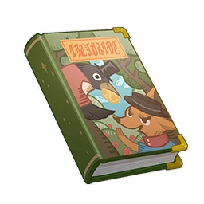

Teyvat & Unknown · Books & Literature
Fables de Fontaine
This in-world three-volume anthology is credited to Marie Hericart de La Fontaine; its description says most pieces were compiled from ancient poems that are now lost.

A three-volume anthology
Fables de Fontaine is an in-world book collection of three short stories. The volumes are found around Fontaine: Hubel sells Volume I at the Court of Fontaine, Volume II is at Romaritime Harbor, and Volume III is beside the Beaumont Workshop.
The collection's item description credits Marie Hericart de La Fontaine and says most of its material was compiled from ancient poems that have since been lost. It does not name the original poets or date those poems.
Volume I: The Maiden and the Sun
A fox seeks the most powerful husband for her adopted daughter. The sun, clouds, wind, mountain, and a mouse each point to a stronger force; after the chain circles back, the daughter marries the sun.
The printed moral links the story to accepting one's duty and destiny. The fable presents that lesson through a deliberately circular sequence, not as a record of an actual marriage or a Teyvat creation story.
Volume II: The Crow and the Fox
A fox persuades a crow to give up its cheese by first warning it against eating it, then appealing to the crow's curiosity about recipes. The crow opens its beak to ask for more information, drops the cheese, and the fox takes it.
The book's moral warns that chasing knowledge one should not seek can cost someone what they already possess. The tale's wording is its own fable lesson; it does not identify a real Fontaine secret or a specific forbidden text.
Volume III: The Tale of the Donkey
After hearing how the fox took the crow's cheese, a donkey imitates the fox to steal cheese from a passing cheesemaker's daughter. The attempt fails, and the girl drives the donkey away.
This volume's moral favors self-knowledge over copying someone else's manner. It also completes the small sequence begun in Volume II by reusing the fox's trick as the donkey's failed model.
The achievement and the story collection
Collecting all three volumes awards Renart the Deceiver. The achievement confirms the set's collection status and its recurring fox motif; it does not add a date or source for the lost poems described in the books.
The collection is filed under Teyvat and Unknown in this archive because its stories do not establish a specific historical region. Its Fontaine locations describe where Travelers find the books, while the fables themselves leave their earlier provenance open.
What the books establish
The game establishes the three titles, their compiler credit, their stated connection to lost ancient poems, and the fables' printed morals. The texts are short literary tales rather than eyewitness accounts.
No original poet, composition date, or historical event behind the stories is named. Read their morals as part of the collection's fiction unless another in-game source independently connects a detail to Teyvat's history.
This is an original CoreGG reading guide, not an official HoYoverse article or a reproduction of the game text. Source links below identify the records used so you can check the original context.
Sources & references
Check these sources for the original game text and reference trail.